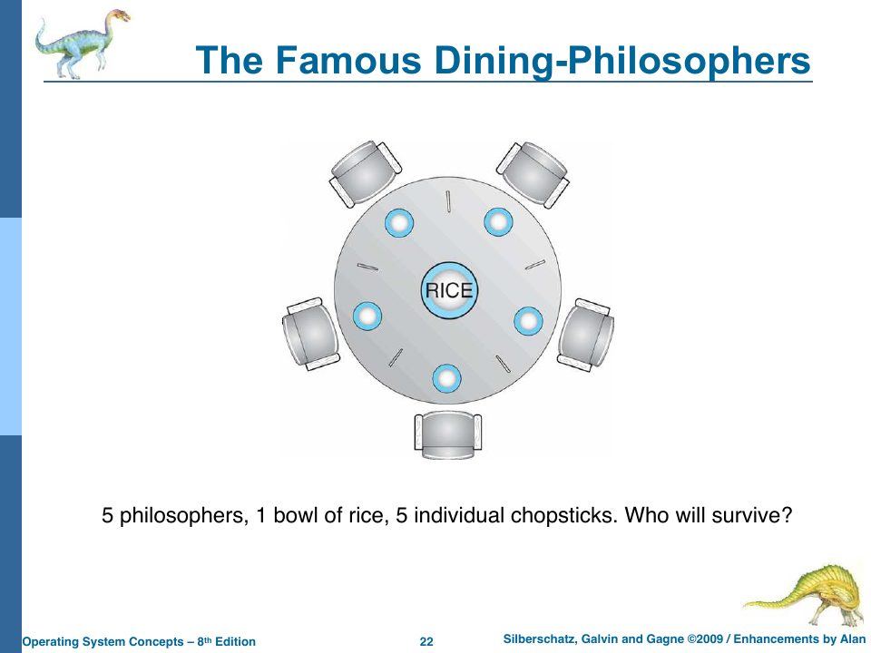
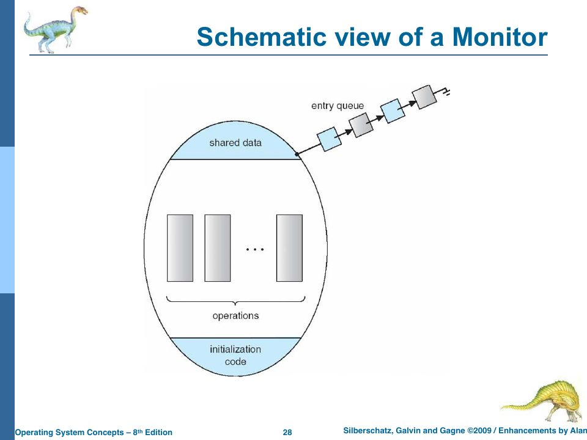

Synchronization and Deadlock
Slides: Chapters 6 and 7, “Synchronization and Deadlocks,” pp. 491–553.
This is the one major topic of the course that rObSen never had to confront, and the reason is worth understanding precisely: rObSen’s kernel runs on a single JavaScript thread that is never interrupted mid-function, and its processes share no memory. Take away either of those, and every problem in this chapter appears at once. So this chapter does three things: it covers the theory, it demonstrates the problems with small simulations built from rObSen’s own parts, and it shows where rObSen would need synchronization if it grew.
The problem: races
“Concurrent access to shared data may result in data inconsistency. (This is bad.)” (slide p. 492). The slides’ first example is written in 6502a (p. 493): two processes each want to double the value at $10.
P1 P2
LDA $10 LDA $10
ADC $10 ADC $10
STA $10 STA $10
“We are fine if they execute in serial. But if not, there could be trouble. Lost reads, lost writes, and the whole thing is a race condition.” The trouble is that each process assumes “the accumulator [is] untouched while we’re adding and storing,” and more importantly that $10 is untouched between its load and its store.
How bad is it? src/code/sims/race.ts tries every possible interleaving of the six instructions, a context switch potentially between any two, starting with $10 = 1:
$ tsc --target es2022 race.ts && node race.js
final value 2: 12 schedules, e.g. AABBAB AABBBA ABABAB ABABBA
final value 3: 6 schedules, e.g. AABABB ABAABB ABBBAA BAAABB
final value 4: 2 schedules, e.g. AAABBB BBBAAA
Only the two serial schedules (all of A then all of B, or the reverse) give the right answer, 4. Twelve of twenty lose one doubling entirely (a lost write: both read 1, both store 2). And six produce 3, a value that no serial order could produce: in AABABB, A loads 1 and adds to get 2; B loads 1; A stores 2; B adds the new $10 (2) to its stale 1 and stores 3. That’s a lost read mixed with a fresh one.
The slides’ other examples (pp. 495–502) are the same bug in other clothes: two ticket sellers who both check “seats available” before either decrements it, and the 2016 DAO hack, in which a smart contract sent a user their balance before setting the balance to zero, letting a malicious contract call back in and withdraw again and again (a “reentrancy” attack). It cost about $50 million.
Critical sections and locks
The fix is a critical section: a stretch of code that only one process may execute at a time (slide p. 494). The general shape (p. 503):
while TRUE {
acquire lock
critical section
release lock
remainder section
}
“What do these locks look like? How are they implemented?”
Semaphores
Dijkstra’s semaphore (p. 504) is an integer S accessed only through two atomic operations, originally named in Dutch:
wait(S) / P (proberen, "try"): while (S <= 0) ; // busy wait
S--;
signal(S) / V (verhogen, "increment"): S++;
A binary semaphore (0 or 1) is a mutex lock: initialize it to 1, wait before the critical section, signal after. A counting semaphore allows n holders at once. Semaphores also enforce ordering: to make S1 (in P1) happen before S2 (in P2), initialize synch to 0, have P1 run S1 then signal(synch), and have P2 wait(synch) before S2 (p. 505).
The catch is the word atomic. wait must test and decrement S without anyone else getting in between, which is itself a critical-section problem (p. 507). Hardware solves it with an atomic instruction (test-and-set, compare-and-swap) or, on a single processor, by disabling interrupts for the few instructions it takes. (Lamport’s bakery algorithm, linked from slide p. 506, achieves mutual exclusion with only ordinary reads and writes, which is remarkable, but slow.)
The while (S <= 0); loop is busy waiting, which wastes the CPU. Real semaphores instead put the waiting process on a queue attached to the semaphore and block it; signal wakes one. Chapter 19a builds exactly that in TypeScript, with promises.
Why rObSen’s kernel has no races
Every kernel function in rObSen runs inside a single JavaScript callback, and JavaScript never interrupts a callback to run another (Chapter 10a). The timer ISR can’t be interrupted by a keystroke; the shell’s load can’t be interrupted by a context switch. In OS terms, the whole kernel runs with interrupts disabled. That makes the entire kernel one big critical section, which is the oldest synchronization strategy there is (early UNIX on uniprocessors did much the same: kernel code was non-preemptible).
And rObSen’s user processes can’t race either, because they share nothing. Every address a process uses is folded into its own 256-byte partition (Chapter 4). The slides’ doubling example can’t happen in rObSen.
So when would rObSen need synchronization?
- Shared memory between processes (Chapter 9’s suggested extension). Then the race above happens for real, and user programs need a lock. The 6502a has no atomic instruction, so the natural design is for the kernel to provide semaphores as system calls, say
X = 03forwait(Y)andX = 04forsignal(Y). Because system calls run in the kernel, between instructions, on the single JavaScript thread, they are automatically atomic. A process thatwaits on a zero semaphore would move to a new waiting state (on the semaphore’s queue) instead of the ready queue, andsignalwould move one waiter back. - Asynchronous disk I/O (Chapter 16’s sketch). Once a disk request “takes time,” a process can be halfway through updating a file when another process starts reading it. That’s exactly the “check, then await, then act” race that Chapter 19a demonstrates within single-threaded JavaScript.
- Multiple CPUs (Alan’s comment in
hostBtnStartOS_click). Even simulated on one JavaScript thread, two CPUs taking turns instruction by instruction would let two processes interleave on shared data, and the ready queue would need protecting if each CPU ran its own scheduler.
Deadlock and starvation
Locks bring their own failure: deadlock, “two or more processes waiting indefinitely for an event that can be caused by only one of the waiting processes” (slide p. 508):
P0 P1
wait(S); wait(Q);
wait(Q); wait(S); ← each holds one and waits for the other, forever
(“Interviewer: If you can explain deadlock I will hire you. Candidate: If you hire me I will explain deadlock.”) Starvation is indefinite waiting of a different kind: a process that’s never chosen from a semaphore’s queue. Priority inversion (p. 509) happens when a low-priority process holds a lock a high-priority process needs, and a medium-priority process keeps the low one from running. It famously reset the Mars Pathfinder lander repeatedly in 1997, until engineers enabled priority inheritance (the lock holder temporarily inherits the waiter’s priority) by remote patch.
The dining philosophers

Each philosopher needs both neighbouring chopsticks to eat. The obvious solution (slide p. 515), wait(chopstick[i]); wait(chopstick[(i+1) % 5]);, deadlocks if all five pick up their left chopstick at once. The slides’ fixes (p. 516): pick up both chopsticks inside a critical section, or allow only four at the table. A third classic fix breaks the symmetry: number the chopsticks and have everyone pick up the lower-numbered one first. Chapter 19a runs both versions:
naive philosophers: DEADLOCK: nobody can eat
ordered philosophers: all 5 philosophers ate
Monitors
“Semaphores are cool and all, but they are low-level and ‘fragile’… Lots of timing problems and Heisenbugs. We need higher-level features for our higher-level languages” (p. 516). A monitor bundles shared data with the procedures that operate on it, and guarantees that only one process is active inside the monitor at a time (pp. 517–518). Java’s synchronized methods are monitors (p. 519). (In JavaScript, every object is effectively a monitor for free, because only one callback runs at a time, until an await lets someone else in.)

Atomic transactions
The second half of Chapter 6 brings in ideas from databases (slides pp. 520–532), where “all good database systems” must deal with concurrency and failure:
- A transaction is a sequence of reads and writes that either commits (all of it happens) or aborts (none of it does; it’s rolled back).
- Write-ahead logging: before changing data, write a log record (transaction, item, old value, new value) to stable storage, bracketed by
<Ti starts>and<Ti commits>. After a crash, redo every transaction with a commit record and undo every one without. Undo and redo must be idempotent (doing them twice is the same as once). Checkpoints limit how far back recovery must look. - Serializability: a concurrent schedule is correct if it’s equivalent to some serial order. Swapping adjacent non-conflicting operations (different data items, or both reads) doesn’t change the outcome, so a schedule that can be rearranged into a serial one is conflict serializable.
- Locking protocols enforce it: shared locks for reading, exclusive locks for writing. Two-phase locking (2PL) requires every transaction to acquire all its locks (the growing phase) before releasing any (the shrinking phase). It guarantees conflict serializability, but “does not prevent deadlock.”
Notice the connection to rObSen’s disk: chkdsk exists because the disk driver writes the directory entry and the data block in separate steps, and a crash between them would leave the file system inconsistent. A write-ahead log would make createFile atomic.
Deadlock, systematically (Chapter 7)
Four conditions must all hold for deadlock (slide p. 536):
- Mutual exclusion: at least one resource is non-shareable.
- Hold and wait: a process holds one resource while waiting for another.
- No preemption: resources are released only voluntarily.
- Circular wait: P0 waits for P1, which waits for P2, …, which waits for P0.
Resource-allocation graphs (pp. 537–541) draw processes as circles and resources as boxes (with a dot per instance), with request edges P → R and assignment edges R → P. “If graph contains no cycles → no deadlock. If graph contains a cycle → if only one instance per resource type, then deadlock; if several instances per resource type, possibility of deadlock.”
There are three broad strategies (p. 547): prevent or avoid deadlock, detect and recover, or ignore the problem (“used by some operating systems, including some versions UNIX!!!”).
Detection (pp. 542–546): maintain a wait-for graph (Pi → Pj if Pi waits for Pj) and periodically search it for a cycle. Recovery means aborting processes, all at once or one at a time, choosing victims by priority, progress, resources held, and so on.
Prevention (pp. 548–549) breaks one of the four conditions: make resources shareable where possible; require processes to request everything up front (no hold-and-wait, at the cost of utilization and possible starvation); preempt resources from a process that must wait; or impose a total order on resource types and require requests in increasing order, which makes circular wait impossible. That last one is the ordered-chopsticks fix.
Avoidance (pp. 550–552) needs advance knowledge: each process declares its maximum need, and the OS grants a request only if the resulting state is safe, meaning there’s some order in which every process can still finish. With multiple instances per resource, that’s the banker’s algorithm: “the OS does not get over-leveraged.”
Allocation Max Need = Max − Allocation
P0 0 1 0 7 5 3 7 4 3
P1 2 0 0 3 2 2 1 2 2
P2 3 0 2 9 0 2 6 0 0
P3 2 1 1 2 2 2 0 1 1
P4 0 0 2 4 3 3 4 3 1Can P1's request (1, 0, 2) be granted? Pretend: Available becomes (2, 3, 0), P1's Allocation (3, 0, 2), its Need (0, 2, 0). The safety check still succeeds, so yes.
Then P0 requests (0, 2, 0). Available would be (2, 1, 0); nobody's Need fits; unsafe: P0 must wait, even though the resources are physically available.
src/code/sims/bankers.ts checks all three answers.
Check yourself
- In the race simulation, why can’t the result ever be 1 or 8?
- Which of the four deadlock conditions does “allow only four philosophers at the table” break?
- Why doesn’t rObSen’s kernel need a lock around the ready queue, and what single change to the host would make it need one?
Answers
- Every process stores something computed from a load of
$10(which is at least 1) plus a later load (at least 1), so the stored value is at least 2. And 8 would require three doublings, but there are only two processes, each doubling at most once. - Circular wait: with only four seated, at least one philosopher can always get both chopsticks, so the cycle can’t close.
- Because every kernel function runs to completion on JavaScript’s single thread, so nothing else touches the queue meanwhile. Adding a second CPU that runs its own scheduler in an interleaved fashion (or moving the CPU into a Web Worker, a separate thread) would.